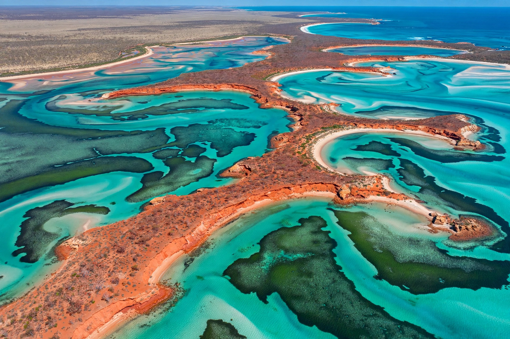

| Shark Bay | |
|---|---|
 | |
| Location | Gascoyne region, Western Australia |
| Area | World Heritage property: 22,009 km² |
| UNESCO | World Heritage Site (1991) |
| Named by | William Dampier (1699) |
Shark Bay (Malgana: Gathaagudu, "two waters") is a large embayment on the coast of Western Australia, about 800 km north of Perth, at the westernmost point of the Australian mainland. Covering some 10,000 km² of shallow, hypersaline water in places, it was inscribed on the UNESCO World Heritage list in 1991 for its exceptional natural values.
The bay holds some of the world's largest and richest seagrass meadows — the Wooramel seagrass bank alone covers about 1,030 km² — which support one of the largest dugong populations on Earth, around 10,000 animals, together with dolphins, turtles and the sharks that give the bay its name (bestowed by William Dampier in 1699). At Hamelin Pool, hypersaline water has preserved a living colony of stromatolites, layered structures built by cyanobacteria closely resembling some of the oldest life forms on Earth. François Péron National Park protects the red cliffs and white beaches of the Péron Peninsula.
At Monkey Mia, wild Indo-Pacific bottlenose dolphins have come into the shallows to be hand-fed by people since the 1960s, one of Australia's best-known wildlife encounters, now carefully managed by rangers. The Shark Bay dolphin population is also famous in behavioural science for tool use — some dolphins carry marine sponges on their beaks to protect them while foraging on the sea floor.
Aboriginal people have occupied the region for at least 30,000 years. Dirk Hartog landed on the island now bearing his name in 1616, leaving an inscribed pewter plate — the first known European landing on Australia's west coast. A pearling and pastoral industry followed in the 19th century; the main town is Denham.